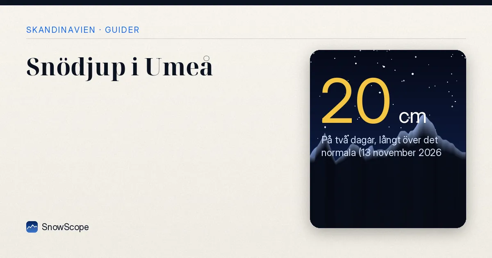

Snödjup i Umeå: 20 cm på två dagar, långt över det normala (13 november 2026)
Snön kom plötsligt och djup till Umeå. För fyra dagar sedan var marken bar; nu ligger det 20 cm. Detta är vad som normalt tar till december att bygga upp.
Se snöprognosen för Umeå live i SnowScope-appenSnödjup, pudervarningar och 3D-kartan, gratis.
Så fort snön kom
Språnget var synligt i en mätcykel. Umeå-Röbäcksdalen, stationen på stadens västra sida på 10 m höjd, hade ingenting den 9 november, sedan 5 cm den 12 november, sedan 20 cm på morgonen den 13 november. Ingen gradvis drift—ett klart väderslag.
Samma mönster gällde i hela området. Nordanbäck, 49 km inåt land på 185 m höjd, gick från 8 cm till 22 cm på en dag. Vännäs gjorde språnget från noll till 18 cm. Även Rickleå på kusten, som fick mindre, gick från bar mark till 12 cm. Detta var inte lokalt; det var regionalt.

Tidpunkten spelar roll: före schemat
Snö i början på november är sällsynt för Umeå. Under de senaste 46 vintrarna låg snö på marken den 13 november bara 26 gånger—drygt hälften. När det gjorde det betydde det vanligtvis 1 cm eller mindre. Bara en av fyra vintrar hade nått 5 cm på detta datum. Det djupaste 13 november någonsin var 34 cm, så dagens 20 cm ligger högt.
Kalendern berättar historien. Umeå når normalt 20 cm först i början på december. Medianvärdet för 1 december är 6 cm; den 15 december klättrar det till 10 cm. Mitten på januari ger säsongens typiska topp på ungefär 25 cm. Denna novembersnö har snabbspole två veckor av vintern framåt.
Vad kommande dagar gör
Helgen gynnar att snön stannar. Lördag är torrt, med natttemperaturer nära -10 °C och bara mild upptining på eftermiddagen. Söndag håller sitt täcke, även om det värms till omkring 4 °C. Ingen dag ger regn.
Måndag är vändpunkten. Regn kommer att falla—omkring 8 till 9 mm—och temperaturerna stiger till omkring 6 °C. Snö på 20 cm djup försvinner inte på en dag, men blir tung, tät och hårdpackad. Om den fryser under natten på tisdag blir ytan is. Vänta dig krympning, inte försvinnande.
Där snön ligger djupast
Liten höjdskillnad spelar här roll. Nordanbäck på 185 m håller den djupaste snön på 22 cm, medan stadsstationen på 10 m har 20 cm. Balsjö, på 201 m inåt land, berättar en annan historia med bara 8 cm, så höjd ensamt förklarar inte spridningen. Snöfallet var vidare än djupvariation.
Markförhållandena varierar också. Nära kusten på Rickleå (12 m höjd) ligger snön på förmodligen ofryst jord. Inåt land på Nordanbäck och Balsjö på högre mark är basen sannolikt kallare. Detta spelar roll för dränering och sättning de kommande dagarna.
Vinterens falskt startskott?
Detta är tidig snö för Umeå, men inte oprövad. Vintern 2023-24 hade också 7 cm på den 13 november. Skillnaden är djupet: 20 cm är ungefär tre gånger denna siffra. De senaste fem åren såg huvudsakligen bar mark på detta datum, så denna ankomst sticker ut.
Vad som händer nästa beror på om detta var början på bestående vinter eller ett kort intrång. Regnet på måndag kommer att pröva snöns grepp. Om temperaturerna blir låga och mer snö faller, kommer täcket att hållas. Om regnet fortsätter och mild luft dröjer sig kvar, kan denna vita november bli ett minne från december.
Tips för skidåkare
- Lördag är perfekt för första utfärder: torrt, kallt och den vita marken är färsk. Ta på dig bra fäste under fötterna då basen är tunn.
- Måndagens regn och mild luft kommer att mjuka upp snön. Tisdagsmorgon kommer ytorna att frysa hard; använd kåpor eller kryckor på utomhustrappor och vägar.
- Vägar inåt land på ofryst jord kan bli mjuka eller gytjiga under den nya snön. Kör långsamt på grus- och skogsvägar.
- Klä dig i lager: Lördagens kyla (-10 °C på natten) ger vika för söndagens värme. Växlingen går snabbt i övergångsvädret.
- Kontrollera lokala lavinprognoser innan du åker ut i någon brant terräng i närliggande höjder.
Om siffrorna
Snödjupen för skidorterna är det djupaste snötäcket på ortens övre backar på det angivna datumet; de är uppskattningar för ett område, inte en mätning på en punkt. Prognoser kan ändras. Läs alltid den officiella lavinprognosen innan du åker offpist.
Citera den här rapporten
För forskning, undervisning eller press: siffrorna och diagrammen får återanvändas fritt under CC BY 4.0 med den här källhänvisningen.
SnowScope (2026), Snödjup i Umeå: 20 cm på två dagar, långt över det normala (13 november 2026), https://snowscope.app/blog/sv/2026/11/umea-snow-depth-13-november-2026.html, hämtad 2026-11-13
SnowScope (Atlas Labs). (2026, November 13). Snödjup i Umeå: 20 cm på två dagar, långt över det normala (13 november 2026). SnowScope snow reports. https://snowscope.app/blog/sv/2026/11/umea-snow-depth-13-november-2026.html
BibTeX
@misc{snowscope2026umeasnowdepth13november2,
author = {{SnowScope (Atlas Labs)}},
title = {Snödjup i Umeå: 20 cm på två dagar, långt över det normala (13 november 2026)},
year = {2026},
month = nov,
howpublished = {\url{https://snowscope.app/blog/sv/2026/11/umea-snow-depth-13-november-2026.html}},
note = {Published 2026-11-13 19:49 UTC; accessed 2026-11-13}
}· CC BY 4.0 · Metoder, data och verktyg →
Följ Umeå
Gratis: ett meddelande när nysnö är på väg, och prognosen varje morgon.